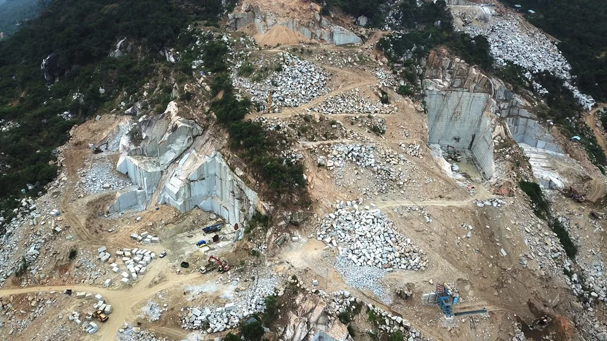
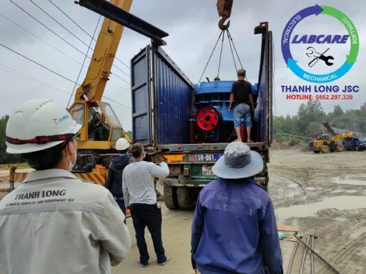
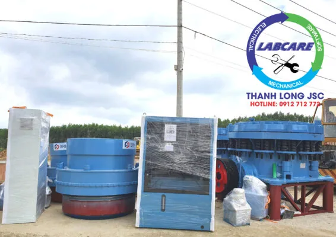

Trạm nghiền đá xây dựng tại Bình Định được hoàn thành vào mùa dịch bệnh covid 19 này, nhằm đáp ứng nhu cầu đá xây dựng, vật liệu xây dựng, cấp phối cao tốc, phụ gia cho các công trình, dự án xây dựng lớn nhỏ ở Nam Trung Bộ nói chung và tỉnh Bình Định Nói riêng. Trạm nghiền đá xây dựng được sử dụng rộng rãi hơn. Đem lại sự thuận tiện trong quá trình khai thác. Phân chia sản phẩm theo nhu cầu, phục vụ thị trường xây dựng khó tính.
Bình Định là tỉnh duyên hải Nam Trung bộ, nằm trong vùng kinh tế trọng điểm miền Trung. Phía Bắc giáp tỉnh Quảng Ngãi, phía Nam giáp tỉnh Phú Yên, phía Tây giáp tỉnh Gia Lai và phía Đông giáp biển Đông. Cách Hà Nội 1.065 km về phía Nam, cách thành phố Hồ Chí Minh 649 km về phía Bắc.
Tài nguyên khoáng sản tại Tỉnh Bình Định
Tài nguyên khoáng sản ở Bình Định khá đa dạng, đáng chú ý nhất là đá Granite có trữ lượng khoảng 500 triệu m3, với nhiều màu sắc đỏ, đen, vàng… là VLXD cao cấp được thị trường trong và ngoài nước ưa chuộng. Sa khoáng titan tập trung ở mỏ Đề Gi (Phù Cát) trữ lượng khoảng 1,5 triệu m3. Cát trắng ở Hoài Nhơn, trữ lượng khoảng 90.000 m3. Ngoài ra, còn có các khoáng sản khác như cao lanh, đất sét và đặc biệt là các quặng vàng ở Hoài Ân, Vĩnh Thạnh, Tây Sơn.

Trạm nghiền đá xây dựng tại Bình Định làm được những gì ?
Tùy thuộc vào yêu cầu của từng công trình mà trạm nghiền đá xây dựng sẽ cho ra những sản phẩm khác nhau như Đá dăm , Đá mi bụi, Đá 1×2 , Đá mi sàng , Đá 4×6 , Đá 5×7 , Đá hộc , … cung cấp cho từng mục đích.
Trạm máy nghiền đá xây dựng không chỉ biến đá to thành kích thước nhỏ hơn. Mà còn làm đẹp các bề mặt đá, nâng cao mục đích sử dụng.
Ngoài việc làm nền móng cho các công trình, đá còn dùng làm cốt liệu cho bê tông. Gạch không nung, đá vôi để sản xuất xi măng, …
Những lưu ý “thông minh” khi mua Trạm nghiền đá xây dựng
Việt Nam được xem là một trong những nước đang có khả năng phát triển rất lớn. Nhu cầu sử dụng vật liệu xây dựng đá là rất cao.
Trạm nghiền đá phế liệu thanh lý không phải là thiết bị chính hãng mới 100% nên tiềm ẩn rất nhiều nguy cơ về hàng tự chế, hàng nhái thương hiệu, kém chất lượng. Tình huống hay gặp nhất là ngoại hình máy trông còn khá mới. Nhưng bên trong lại là các phụ kiện cũ, đã được thay thế bằng các linh kiện kém chất lượng.
Ngoài ra, cũng có trường hợp nhà cung cấp cố tình làm giả nhãn mác của thương hiệu uy tín. Để đánh lừa khách hàng, nhằm tăng giá bán thiết bị để trục lợi.
Thời gian sử dụng, độ bền máy nghiền đá bị khấu hao theo từng năm, tháng thậm chí cả từng giờ. Với máy nghiền đá cũ thì mức độ hao mòn thiết bị đã khá cao nên độ bền chắc chắn sẽ thấp hơn so với máy nghiền đá mới. Ngoài ra, nếu mua máy nghiền đá cũ thì bạn cũng khó đoán biết được khi nào máy sẽ hư hỏng, không thể dùng được nữa.
-

Máy nghiền vật liệu xây dựng ở Mỏ đá lớn nhất Đông Nam Bộ Máy nghiền đá xây dựng cũ công suất yếu
Máy nghiền đá cũ là thiết bị đã qua sử dụng. Do đó, chất lượng hoạt động, công suất máy sẽ không còn được như lúc đầu. Ngoài ra, hiệu quả nghiền cũng có thể giảm sút rất đáng kể. Gây ảnh hưởng rất lớn đến tiến độ, hiệu quả SX của DN, gây mất uy tín với đối tác xây dựng.
Một trong những vấn đề khiến doanh nghiệp “rối não” nhất khi dùng máy nghiền đá cũ là máy rất dễ hư hỏng, trục trặc trong quá trình sản xuất, do đó cần phải bảo trì, sửa chữa thường xuyên. Điều này khiến chi phí hoạt động, bảo dưỡng, bảo trì. Vật tư tiêu hao máy nghiền đá tăng lên đáng kể, thậm chí nhiều hơn cả khi mua mới.
Đặc biệt, một số dòng máy nghiền đá phế liệu hàng bãi có model quá cũ nên nhà sản xuất đã không còn cung cấp linh kiện, vật tư thay thế nữa. Dù có muốn thay mới thì cũng rất khó tìm ra linh kiện phù hợp. Nếu chỉ sửa chữa để sử dụng tiếp thì các hư hỏng của máy sẽ vẫn lặp đi lặp lại. Vừa gây tốn kém vừa ảnh hưởng đến hoạt động sản xuất.
Vì khả năng hoạt động giảm sút sau một thời gian sử dụng nên đa số các model máy nghiền đá phế liệu cũ thường có mức tiêu hao năng lượng lớn hơn. Bên cạnh đó, máy đời cũ không được trang bị các công nghệ tiên tiến nên khả năng tiết kiệm điện năng sẽ không bằng các dòng máy mới trên thị trường.
Trạm nghiền đá xây dựng chính hãng mới sẽ được đi kèm với chế độ bảo hành và hỗ trợ từ nhà sản xuất. Ví dụ như tại Thanh Long JSC, khi mua trạm máy nghiền đá xây dựng Thanh Long, bạn sẽ được bảo hành trong vòng 2 năm, 6 tháng bảo dưỡng định kỳ 1 lần, tư vấn 24/24 và hỗ trợ sửa chữa trong vòng 72 giờ, các sự cố nhỏ có thể tư vấn trực tiếp qua video call. Tuy nhiên, nếu mua máy nghiền đá cũ, sẽ không được các chính sách bảo hành, sửa chữa chính hãng.

Trạm nghiền đá xây dựng 0912712772
Thanh Long JSC là nhà cung cấp của SRH tại Việt Nam
Là thiết bị nghiền số 1 thế giới, với hơn 150 năm đi đầu trong lĩnh vực công nghệ nghiền sàng đá, các trạm nghiền của SRH tại Việt Nam được các chủ đầu tư lựa chọn và tin tưởng bởi các yếu tố sau:
- Tiết kiệm điện từ 4000đ/ 1 khối đá đầu ra.
- Vật tư tiêu hao bền hơn 2 lần so với các NSX khác, và luôn có sẵn tại kho.
- Hoạt động bền bỉ không dừng máy, chi phí sản xuất thấp
- Hệ thống báo hiệu cảnh báo áp suất, nhiệt độ, khe xả trên màn hiển thị.
- Hệ thống chống kẹt đá, phát hiện kim loại, chống quá tải được tích hợp.
- Đội ngũ kỹ sư tay nghề cao, nhiều kinh nghiệm, đã được Thanh Long đào tạo theo tiêu chuẩn Châu Âu. Sẵn sàng xử lý sự cố khi cần.
Thanh Long JSC đại diện SRH tại Việt Nam chuyên cung cấp các sản phẩm dịch vụ về khai thác khoáng sản từ 100 tấn/h đến 2000 tấn/h:
- Dây chuyền nghiền cát/đá cố định: Máy kẹp hàm, máy nghiền côn, sàng rung phân loại, máy nghiền cát nhân tạo VSI, …
- Dây chuyền nghiền cát/đá di động: máy kẹp hàm di động, máy nghiền côn di động, sàng rung phân loại di động, máy nghiền cát nhân tạo VSI di động,..
- Công nghệ rửa/tách:: Máy rửa cát theo module, sàng rung tách nước, máy tuyển rửa cát, máy tách cát mịn, máy thu hồi cát mịn…
- Vật tư, thiết bị phụ tùng: Dao nghiền, lưới sàng, má kẹp hàm, nón côn, …
BÁO GIÁ MÁY NGHIỀN ĐÁ – CÔNG TY THANH LONG
Các dự án lớn đã lắp đặt dây chuyền tại Việt Nam:
Khánh thành dây chuyền nghiền cát nhân tạo phục vụ cho bê tông
GIAO HÀNG MÁY NGHIỀN CÁT NHÂN TẠO VSI
Cận cảnh máy nghiền đá hoạt động tại mỏ đá Việt Nam
Lắp đặt trạm nghiền đá và cát xây dựng được nhập khẩu hoàn toàn từ Phần Lan.
Khủng khiếp máy nghiền đá xây dựng lớn nhất Việt Nam
Toàn cảnh dây chuyền nghiền cát nhân tạo tại Việt Nam
Kênh video Youtube: Thế giới máy nghiền đá và Thanh Long JSC
Page Facebook: Công Nghệ Máy Nghiền Đá
Website: https://thegioimaynghienda.com https://labcare.com.vn/
Zalo, hotline: 0912 712 772
#bn